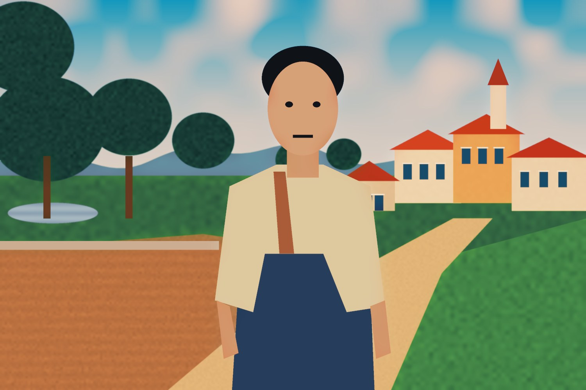

The panel is 400 px wide, as in the app. The picture is a synthetic scene; the values are illustrative.

The glyph (proposal). A picture beside a picture, with a grade curve in the front one: “this photo, graded like that one”. It sits beside the mask glyph in the card’s footer at 14 px, and in the Add node menu at 24 px. It is drawn with the same 2 px stroke and round caps as Blur’s and Colour Uniform’s, so it is not a filled shape and does not read as the Output look’s half-disc.
Reference Grade
Bypassed
Not connected